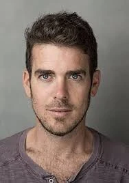

כפר עזה
וינר יהב ז"ל
יוצר קולנוע, שחקן, אב ובעל
סיפור חיים
יהב וינר ז״ל, בנם הבכור של מיכל ועופר, נולד בכ״ו באייר תשמ״ו, 4 ביוני 1986, בקיבוץ כפר עזה. הוא היה אח לאלמוג, דניאל ואסף.
יהב גדל והתחנך בכפר עזה. הוא היה ילד יפה תואר, ברוך כישרונות ואהוב על הבריות. למד בבית החינוך שער הנגב, וגדל בתוך נופי הקיבוץ, השדות והקהילה שהפכו בהמשך לחלק עמוק מיצירתו.
על ילדותו בקיבוץ סיפר כי היא זכורה לו כקסומה - מדרכות קטנות, עצים גדולים, שמחה, טרקטורים, חיות ושיטוט אינסופי בשדות הענקיים.
מגיל צעיר אהב יהב להשתתף בהצגות, לשחק, לביים אחרים, לנגן בגיטרה ובפסנתר וליצור. בשעות הפנאי שיחק כדורגל, והיה אוהד של קבוצת מכבי תל אביב.
יהב היה בן מסור להוריו ואח אוהב ואהוב. אימו מיכל סיפרה כי כבן הבכור, עיני אחיו היו נשואות אליו. הוא היה דומיננטי במשפחה, דאג לבקר ולדבר עם סבא וסבתא משני הצדדים, וניחן ברגישות מיוחדת כבר מילדותו.
לאחר לימודיו עשה שנת שירות כמדריך נוער בעין גדי, ובהמשך התגייס לצה״ל. לאחר שחרורו חזר לקיבוץ ועבד עם אביו בשדות.
ב־9 במאי 2008, כשהיה בן 22, פצצת מרגמה שנורתה לעבר כפר עזה פגעה פגיעה ישירה בשכנו ג׳ימי קדושים. יהב רץ לסייע וראה את שכנו האהוב הרוג. האירוע הותיר בו חותם עמוק, והשפיע גם על יצירתו ועל הדרך שבה עסק בקולנוע בחיים על גבול עזה.
בשנת 2012 החל ללמוד בסטודיו למשחק ניסן נתיב ועבר לתל אביב. הוא סיים את לימודיו בהצטיינות, ושיחק בתיאטרון הבימה, בתיאטרון הקיבוץ, בסרטי קולנוע ובפרסומות.
במהלך לימודיו הכיר את שי־לי עטרי. בין השניים נרקמה אהבה גדולה, והם הפכו לבלתי נפרדים. שי־לי סיפרה כי הפגישה המקרית ביניהם שינתה את חייה, והביאה אליה אושר טהור ויפה.
בשנת 2017 נישאו יהב ושי־לי, והחלו להגשים יחד חלום משותף של לימודי קולנוע. שי־לי למדה באוניברסיטת תל אביב, ויהב בבית הספר מנשר לאמנות. הוא בלט בכישרונו, בחריצותו, בשאלות ששאל ובדרך שבה אתגר את עצמו ואת סביבתו.
במהלך לימודיו כתב, ביים וצילם סרטים קצרים. סרטו ״Faith״ זכה בפרס סרט הסטודנטים הטוב ביותר בפסטיבל סולידריות לשנת 2020 ובפרס התסריט הטוב בפסטיבל Little Wing Film Festival. במקביל, הפיק את סרטיה הקצרים של שי־לי.
בשנת 2020 עברו יהב ושי־לי להתגורר בכפר עזה. יהב החל לעבוד בבית הספר לקולנוע וטלוויזיה של מכללת ספיר כמנהל ההפקות במכללה.
בקיבוץ יצר יהב את סרטו הקצר ״הילד״, העוסק בתקופת נעוריו בכפר עזה ומספר על אב ובנו הפוסט־טראומטי המתמודדים עם ירי רקטות מרצועת עזה. הסרט זכה בפרס הצילום הטוב ביותר בפסטיבל הבינלאומי לסרטי סטודנטים בתל אביב בשנת 2023.
ביוני 2023 צילם את סרט הביכורים הארוך שלו, ״הגדת קיבוץ״. בסרט שיחקו יהב ושי־לי את הדמויות הראשיות, והשתתפו בו גם אביו וחברי קיבוץ נוספים. יהב כתב כי המציאות התערבבה עם הדמיון, וכי לרגע לא ידע אם הם יוצרים סרט או פשוט מצלמים יפה את החיים שלו ושל שי־לי - הקיבוץ האהוב שלו, שרוב הזמן נעים ויפה בו, וחלק מהזמן מפחיד מאוד.
בספטמבר 2023 נולדה בתם שייה. יהב היה אב מסור ואוהב, בן זוג תומך ואיש משפחה מלא רוך. ליד שי־לי ושייה, חייו ויצירתו התחברו אל הבית, אל הקיבוץ ואל החלום להקים משפחה במקום שבו גדל.
יהב היה אדם רגיש, רחב לב ומלא נתינה. מי שפגש אותו זכר עיניים שקופות וחשופות, חיוך רך, פשטות, כנות, עומק ורגישות. הוא היה קיבוצניק, עובד אדמה, יוצר, שחקן ואיש קולנוע - אדם שידע להפוך חיים, כאב, אהבה ופחד ליצירה.
שבעה באוקטובר והימים שאחריו בבוקר שבת, שמחת תורה תשפ״ד, 7 באוקטובר 2023, חדרו מחבלים לקיבוץ כפר עזה במסגרת מתקפת הטרור הרצחנית על יישובי עוטף עזה.
באותו בוקר שהו יהב, שי־לי ובתם התינוקת שייה בביתם בכפר עזה. עם תחילת המתקפה נכנסו לממ״ד.
מחבלים ניסו לפרוץ את חלון הממ״ד מבחוץ. יהב נעמד מולם ונאבק בהם בגופו, כדי למנוע מהם להיכנס ולאפשר לשי־לי ולשייה להימלט. הוא סימן לשי־לי לצאת מהבית עם בתם, והמשיך להיאבק במחבלים.
שי־לי ושייה הצליחו לברוח ולהסתתר במחסן סמוך, ובהמשך מצאו מחסה בבית משפחה שהכניסה אותן לממ״ד. שם שהו במשך יותר מיממה.
יהב וינר נרצח בביתו בכפר עזה בכ״ב בתשרי תשפ״ד, 7 באוקטובר 2023. בן 37 היה במותו.
בימים הראשונים הוגדר נעדר, עד שמשפחתו קיבלה את הבשורה הקשה. הוא הובא תחילה למנוחות בבית העלמין בשריגים, ובקיץ 2025 הושב למנוחת עולמים בבית העלמין של כפר עזה.
על מצבתו כתבו אוהביו: ״יהב שלנו, תמשיך לחלום, נאהב אותך לנצח.״
זיכרון ומילים מהלב שי־לי, אשתו של יהב, כתבה: ״החוסר שלך מורגש יותר מיום ליום. מתגעגעת אליך בכל נים ושערה בגוף שלי... אין לי יותר עם מי לחלוק זיכרונות. אין לי את העיניים שלך להסתכל עליהן כשמשהו מזכיר לנו ביחד זיכרון מרגע אחר. היית החיים שלי. היית החיים עצמם.״
לאחר מותו המשיכה יצירתו של יהב להדהד. סרטו ״הילד״ הוקרן בבתי קולנוע ברחבי הארץ, ובנובמבר 2023 זכה בשני פרסים בפסטיבל הסרטים במינכן. בספטמבר 2024 זכה הסרט בפרס הסרט העלילתי הקצר הטוב ביותר בטקס פרסי אופיר. שי־לי עלתה לקבל את הפרס בשמו ואמרה שתעשה הכול כדי שיצירתו תמשיך להדהד גם אחרי לכתו.
אחיו אלמוג יזם כתיבת ספר תורה לעילוי נשמתו של יהב.
יהב נזכר כיוצר קולנוע מוכשר ורגיש, שחקן, במאי, מפיק, בן, אח, בן זוג ואב צעיר. אדם שחלם, יצר, אהב את הקיבוץ שלו ואת משפחתו, ונפל כשהגן בגופו על אשתו ובתו התינוקת.
חייו ויצירתו נותרו עדות לאהבה, לכאב, לחלום ולרצון להמשיך לספר את הסיפור של הבית, של כפר עזה ושל האנשים שחיו בו.